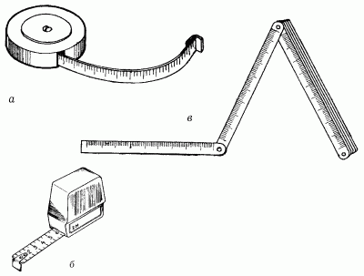
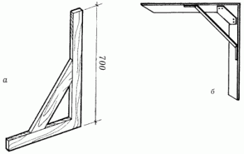
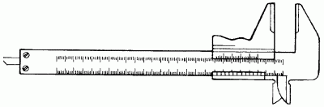
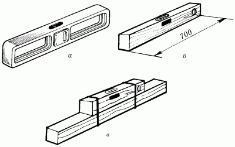
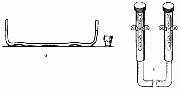
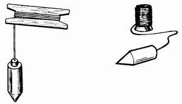
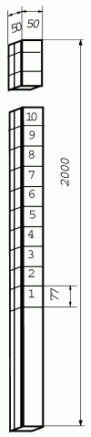

Измерительные инструменты.


Без них невозможно представить выполнение даже самой простой как строительной, так и отделочной операции.
РулеткаДанный вид измерительного инструмента – это лента из тонкой гибкой стали, заключенная в металлический или пластмассовый корпус. Сматывается лента автоматически при нажатии кнопки (фиксатора). Длина колеблется от 100 до 1000 см. Рулетки большой длины снабжены пластмассовой или стальной ручкой П-образной формы. Деления нанесены через каждый миллиметр. Цифрами отмечены сантиметры и десятки сантиметров. Рулетка используется для измерения прямолинейных величин.

Рис. 1. Контрольно-измерительные инструменты: а, б – виды рулеток; в – складной метр.
Складной метрПрименяется для измерения вертикальной и горизонтальной кладки.
Состоит из десяти отрезков, скрепленных между собой клепками, по 10 см каждый. Метр изготавливается из пластмассы, железа и древесины мягких пород. Для продления срока службы каждое сочленение смазывают машинным маслом.
Переносить складной метр следует в чехле или в специальном футляре. Не рекомендуется носить метр в кармане, так как острыми краями можно испортить одежду и пораниться.
УгольникОчень прост и удобен в обращении. Но несмотря на простоту, он бывает нескольких видов, каждый из которых имеет особенности и отличия.
Угольник обыкновенныйПредпочтительно, чтобы длина сторон, образующих прямой угол, была не меньше 90–100 см.

Рис. 2. Контрольно-измерительные инструменты: а – деревянный угольник; б – металлический угольник.
Этот вид угольника можно смастерить и самому.
Изготавливается как из металла, так и дерева, но древесина под воздействием влаги разбухает, а при просушке пленки угольника могут деформироваться.
ЕрунокПредставляет собой угольник из двух пластин, одна из которых закреплена на середине другой под углом 45°. Такой угольник удобен также при определении угла 135°.
МалкаИспользуется для перенесения углов без их точного поградусного уточнения. Такой инструмент состоит из двух деревянных пластин, закрепленных на шарнире.
Угольник-центроискательТакой угольник используется при поиске центра у деталей цилиндрической формы. Он состоит из линейки, закрепленной на середине основания равнобедренного треугольника. Угольник укладывается на цилиндрическую поверхность и затем постепенно передвигается к центру, при этом искомая величина является диаметром окружности.
НутромерПредставляет собой некоторое подобие циркуля, концы которого вывернуты наружу. Такой прибор используется для измерения внутреннего диаметра различных деталей.
ЦиркульИспользуется для вырисовывания круглых деталей на заготовках, а также при быстром перенесении разметки.
Обычно он изготавливается из металла, но иногда можно встретить и деревянный. Циркуль известен человечеству уже более двух тысяч лет. Первые циркули были достаточно примитивны и состояли из двух ровных палок с заостренными концами, скрепленных между собой деревянным штырем.
В наше время вид циркуля значительно преобразился.
ШтангенциркульПрименяется для измерения величины деталей. Для этого сторона детали помещается между штангой и рамкой, верхний ус будет показывать размер измеряемого расстояния.

Рис. 3. Штангенциркуль.
РейсмусИспользуется для нанесения на поверхности параллельных стороне бруска линий. Сам рейсмус состоит из двух толстых планок, которые вставлены в большой брусок. На одной из сторон планок имеются острые шпильки – ими и производится разметка.
СкобаПрименяется для нанесения линий при ручной выборке древесины под гнезда и проушины. В основе устройства скобы лежит деревянный брусок, в котором с одной стороны на расстоянии 1/3 всей длины выбрана четверть. Затем на этой четверти на определенном расстоянии вбиваются гвозди, которыми наносится разметка в виде параллельных линий.
Строительный уровеньПрименяется для проверки горизонтальных и вертикальных направлений. Он снабжен специальными устройствами в виде немного изогнутых трубок, сделанных из стекла. Внутри трубочек находится спирт. Две линии в самой высокой части трубки указывают вертикальное направление. Расположение пузырька воздуха между линиями второй трубки указывает горизонтальное направление. Длина уровня должна быть 40–80 см.
При покупке инструмента необходимо обращать внимание на то, чтобы он сохранял показания по всем направлениям.
Для этого надо повернуть уровень на 180°, перед этим расположив его на плоскости. После этого нужно внимательно посмотреть на пузырек воздуха: он должен остаться между двумя мерными линиями.

Рис. 4. Виды уровней: а – металлический; б, в – деревянные.
Хранить его, а также переносить следует только в специальном футляре и во время работы стараться не уронить. Уровень – вещь хрупкая и может очень быстро выйти из строя.
Гибкий уровеньЕсли нет возможности приобрести гибкий уровень промышленного образца, в этом случае его можно заменить гибкой трубкой (как в системе для внутреннего вливания). Она значительно удобнее заводской, так как представляет собой сплошное визирное (смотровое) окошко, и не нужно вымерять количество заливаемой в уровень воды. Длина трубки вычисляется следующим образом: длина облицовываемой поверхности умножается на 1,5.

Рис. 5. Гибкий уровень: а – общий вид; б – оформление оконечностей.
ОтвесОтвес служит для проверки вертикальности стен, столбов, простенков и правильности углов кладки.

Рис. 6. Виды отвесов.
Он состоит из шнура и цилиндрообразного грузила 15 мм в диаметре, весом 150–200 г. При использовании отвеса нужно проверить, как крепко шнур привязан к грузилу, и только если он прикреплен хорошо, стоит приступать к работе.
Применять отвес нужно следующим образом: подойдя к проверяемому углу на расстояние вытянутой руки, а затем согнув руку в локте, надо размотать отвес, держа конец шнура на уровне глаз. После того как произведены вышеуказанные действия, определяется, соответствует ли угол между полом и нитью отвеса углу между полом и тестируемым объектом.
Отвес хранят в сухом и прохладном месте рядом с другим строительным инвентарем. Но прежде чем положить его на хранение, нужно свернуть шнур так, чтобы он не запутался.
ОтволокаИспользуется при отметке линий на краю заготовки. Представляет собой большой брусок со скосом на одном конце и выступом со вбитым гвоздем. Линии отмечаются на поверхности именно острым концом этого гвоздя.
Причальный шнурЭто крученый шнур толщиной 3 мм, который натягивают при кладке верст между порядовками и маяками. Им пользуются как ориентиром для обеспечения прямолинейности и горизонтальности рядов кладки, а также одинаковой толщины горизонтальных швов. С помощью шнура каменщик определяет, какое положение должен иметь каждый укладываемый кирпич в версте.
Устанавливают и переустанавливают шнур с помощью двойной скобы, которая удерживается на рейке порядовки напряжением шнура-причалки и в результате трения между скобой и порядовкой; шнур крепят к зачалочной части скобы.
Для хранения и переноски рекомендуется пользоваться сумкой в виде контейнера размером 350 х 260 х 100 мм.
ПорядовкаЭто специальное приспособление, состоящее из уголков, труб или реек с делениями, соответствующими толщине горизонтальных рядов кладки (77 мм для одинарного и 100 мм для утолщенного кирпича), предназначено для закрепления причального шнура и обеспечения четкости вертикальных и горизонтальных швов выкладываемых стен. Порядовки бывают металлические угловые, рассчитанные на один ярус кладки (до 1,8 м), с винтовыми зажимами, и деревянные промежуточные на один этаж (до 3 м), со скобами и клиньями.

Рис. 7. Инвентарная деревянная порядовка.
Используют порядовку следующим образом: к наружной поверхности стен их устанавливают так, чтобы стороны, на которых размечены ряды кладки, были обращены к каменщику. Порядовку крепят к кладке П-образными стальными держателями. Делают это таким образом.
В горизонтальные швы по ходу кладки через каждые 6–8 рядов по высоте вводят держатели-скобы, располагая их один над другим. Скобы должны войти в стену своими концами и поперечной планкой.
Уложив над вторым держателем один-два ряда кирпичей, в скобы вставляют порядовку и закрепляют деревянными клиньями.
Порядовку снимают, находясь на подмостках, вместе с держателями, не вынимая клиньев. Для этого ее осторожно раскачивают в плоскости, перпендикулярной к поверхности стены. Держатели, преодолевая сопротивление раствора, выходят из горизонтальных швов кладки, и порядовку поднимают вместе с ними.